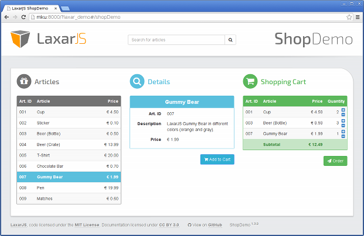
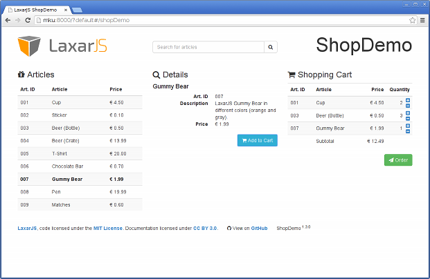
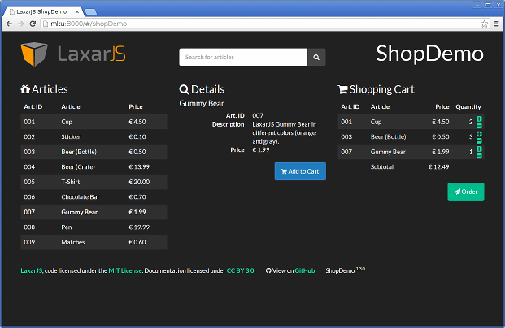
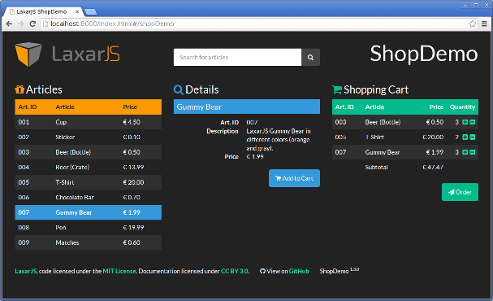

Preliminary readings:
Creating Themes
Sometimes you would like to use one widget in two or more applications. For this, usually you want the widget to behave identically, but look differently. Alternatively, sometimes you would like to offer the same application in different appearances. LaxarJS has the concept of themes to help you achieve these things.
Why Themes?
LaxarJS ships with a so-called default theme, which is actually just Bootstrap CSS together with Font Awesome and a few additional classes. There are several ways to add your own styles.
From Ad-Hoc Styles to Theme Folders…
Usually, you will need to add some CSS classes of your own.
For example, the vast majority of web application needs some styling for the page background and positioning or custom header- and footer-areas.
To include such ad-hoc styles, you could simply add a CSS file of your own to the project, and load it from the debug.html and index.html files using the <link> tag.
However, it is recommended to add these styles to your main application layout instead, into a sub-folder called default.theme/css.
The benefit of using such a theme folder is that
* your CSS will be _bundled and compressed_ together with Bootstrap (no `<link>` tag needed) and that * you can support different _themes_ simply by adding more `.theme` folders.
Due to the first point, using the theme folders is useful and recommended even if you only use (and maybe customize) the default theme.
…and to Custom Themes
As soon as you use multiple page layouts, the previous approach does not really scale anymore: you would have to duplicate your global styles to all of them. In these cases, creating your own theme is definitely recommended. A detailed explanation of creating a theme is given below.
A Note on Compass/SCSS
When using theme folders or entire themes, the runtime will only ever look at .css files in css sub-folders.
This means that it is entirely up to you which (if any) CSS authoring tools you would like to use.
That being said, we use Compass/SCSS to create themes, and the default-theme is based on the SCSS version of Bootstrap. Using this approach makes it very easy to create a custom theme just by changing some Bootstrap SCSS variables. Also, by using SCSS variables defined in the theme, widgets and controls can provide a consistent appearance. After explaining themes in general, further down we give instructions on creating an SCSS theme.
Creating Your Own Theme
Let us create our own theme for an existing application, the LaxarJS ShopDemo. The ShopDemo brings it's own "cube.theme", which is implemented by augmenting Bootstrap with some changes and custom additions, such as the circle icons used with the headlines.

Above: The LaxarJS ShopDemo using the cube theme
However, the demo also works with just the default theme, provided by LaxarJS UiKit, although admittedly it does not look quite as pretty:

Above: The LaxarJS ShopDemo using the default theme
A Custom Theme Using Plain CSS
Since all applications seem to offer a "dark" look these days, let us try to achieve this for our shop demo app. Fortunately, there are several collections of nice bootstrap themes available for free. On the site Bootswatch for example, you will find the theme darkly, which looks like it might work for us.
The only thing that is actually required for a theme to work are a configuration entry and a CSS file in the right place.
Put the pre-built darkly css into the right place, which is includes/themes/darkly.theme/css/theme.css.
The path prefix includes/themes/ may be changed using the RequireJS configuration path laxar-path-themes.
In the LaxarJS configuration (usually application/application.js), change the property laxar.theme from "default" to "darkly".
This causes the LaxarJS runtime to use the new theme.
Because the ShopDemo uses Font Awesome, we need to add an import to the top of our CSS file for that as well:
@import url("//maxcdn.bootstrapcdn.com/font-awesome/4.2.0/css/font-awesome.min.css");
Before opening the application in the browser, make sure to restart the development server, so that the new files are picked up. And voilà, we have a dark web shop:

Above: The all-new ShopDemo using the darkly theme, hopefully not for any shady business
Of course, there are still some rough spots that need additional work: For example, the widget headers look much better using the original laxar demo theme.
Let's fix that using widget-specific styles:
The widget styles use a category/name directory structure, similar to that of the actual widgets.
Here are some suggestions for a nicer look, to be put under widgets/shop-demo:
- ArticleBrowserWidget:
article_browser_widget/css/article_browser_widget.css
Here we color the icon, the headline to match the logo, and the currently selected article to match the details widget.
/** Customize header and icon color: */ .article-browser-widget h3 i { color: #F90; } .article-browser-widget th { background-color: #F90; color: #222222; } /** Highlight the selected article. */ .article-browser-widget tr.selected td { font-weight: bold; background: #3498DB; }
- ArticleTeaserWidget:
article_teaser_widget/css/article_teaser_widget.css
Here we color the icon and the headline to match the button.
/** Customize header and icon color: */ .article-teaser-widget h3 i { color: #3498DB; } .article-teaser-widget h4 { background-color: #3498DB; padding: 8px; }
- ShoppingCartWidget:
shopping_cart_widget/css/shopping_cart_widget.css
Again, we color the icon and the headline to match the button.
/** Customize header and icon color: */ .shopping-cart-widget h3 i { color: #00bc8c; } .shopping-cart-widget th { background-color: #00bc8c; } /** plus/minus buttons */ .shopping-cart-widget .app-increase-quantity { text-align: right !important; } .shopping-cart-widget .app-increase-buttons { padding: 0; padding-top: 6px; width: 40px; } .shopping-cart-widget .app-increase-buttons button { padding: 0; }
Now we have four different CSS files.
Of course, we do not want users to download an additional CSS file for each widget that we use.
Instead, we use grunt dist to create a merged version, which we may load through the index.html.

Above: The all-new ShopDemo using the darkly theme with widget styles. Not too shabby, eh?
Have a look at the dark theme in action.
Of course, there are still some problems with this way of styling widgets. For example, if we would like to change the shade of blue that is used in our theme, we would have to update multiple source code locations. It would be better to have some way to define these values in our theme and reuse them from individual widgets.
Adding a Theme using Compass/SCSS
To support centralized variables, you can use a compiles-to-CSS language such as SCSS/SASS or less. At the LaxarJS team we like Compass, which is built on top of SCSS. Fortunately, an SCSS-version of the darkly theme is available, and can be installed using Bower.
Our SCSS theme uses a single central compass/config.rb for the theme itself, and for individual widgets.
The config.rb has a similar role for SCSS as the require_config.js has for the project's javascript modules: it tells Compass where to find SCSS libraries.
When compiling widget CSS, the path to the config should be passed on the command line:
compass compile -c /path/to/shop-demo/includes/themes/darkly_scss.theme/compass/config.rb
With the right config in place, the SCSS for our theme is little more than a couple of imports.
Execute compass from any parent folder containing the scss, css and possibly also fonts and images directories.
Note that you can probably configure your editor or IDE to always pass the -c option correctly, otherwise you can create a shell alias.
The advantage of using an SCSS theme is that we can now write concise widget styles using central variables. As an example, here is the SCSS file for the ArticleBrowserWidget:
@import "variables_all"; .article-browser-widget { h3 i { color: $app-color-logo; } th { background-color: $app-color-logo; color: $body-bg; } tr.selected td { font-weight: bold; background: $brand-info; } }
Which CSS framework and toolchain to use (if any) is ultimately up to you. The shop demo on github contains the darkly theme both as a plain CSS version, and as an SCSS version.
The Bootstrap framework incurs some degree of boilerplate, but makes it relatively easy to reuse widgets across applications, and to find controls that work with your theme out of the box.
How the Runtime Finds CSS
As mentioned above, the LaxarJS runtime and grunt tasks do not care how you create your CSS. However, these tools need to find it, so it is important where the CSS files are. For details on how CSS and other assets are loaded, have a look at the asset lookup manual.
In general, the lookup order goes like this:
1. if there are _theme-specified styles_ for an artifact (bundled with the application theme in use), then use those 2. if there are _theme-specified styles_ for an artifact (bundled with the artifact itself), then use those 3. else if there are _default styles_ for an artifact then use those 4. else load _nothing_
Of course, load nothing means that it is completely fine for a widget not to have its any CSS styles. If it was missing an HTML template on the other hand, that would simply be an error.